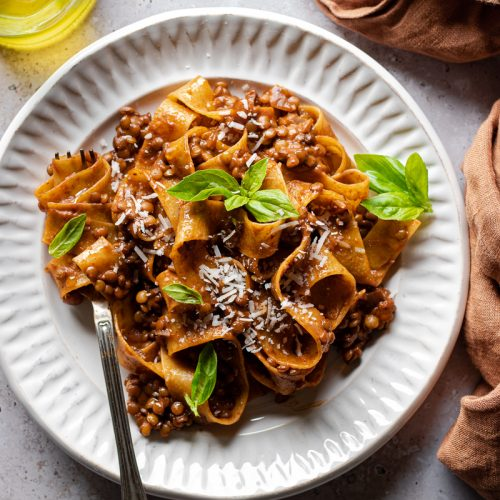

Home
Pappardelle with Lentil Ragu

Description
Hi everyone!
When I stopped eating meat, I knew ragu was one of the things I would miss the most. But thanks to this recipe, all the smell and the taste typical of ragu are guaranteed to be back!
In this recipe I am going to show you how to make Pappardelle (egg pasta) with a lentil-based ragu. It will have the same spices (rosemary, salt and pepper) and veggies (onion, celery and carrots) typical of the traditional ragu. You will hardly be able to tell the difference!
Ingredients
- Soffritto mix x 1 Tbsp
- Lentils x 200 gr (already cooked)
- Pappardelle (or your favourite pasta) x 200 gr
- Tomato passata x 250 ml
- Rosemary
- Salt
- Pepper
- EVO oil
Steps
- Heat a Tbsp of oil in a pan, and add the soffritto mix. Stil until softened
- Add the pre-cooked lentils and mix well, then add rosemary (to taste) and stir for a couple of minutes.
- Add the tomato passata, salt and cook for 5-10 minutes, stirring occasionally.
- Meanwhile, put some water to boil in a pot, with 1/2 Tbsp of salt. Once boiling, put the pasta in the pot and let cook for the time indicated in the package.
- When the pasta is ready, drain it and then add it to the pan where the ragu is cooking. Add some pepper and stir well.
- Serve, and enjoy!